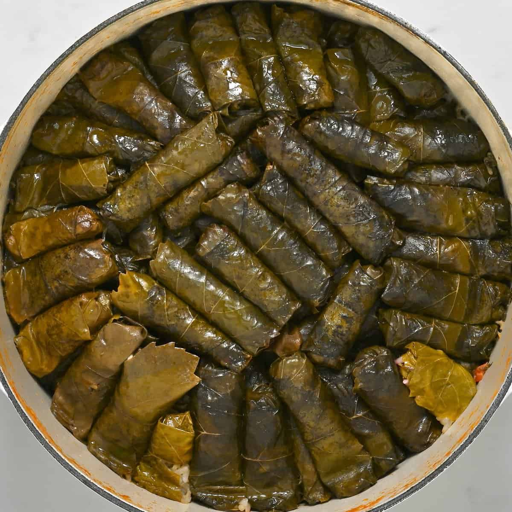

Dolma

Description:
Dolma is a famous Iraqi dish that is very delicious.
Many different cultures make and serve it as an appetizer, but the Iraqi way is served as an actual meal!
Ingredients:
- Grape Leaves
- Rice
- Onions
- Lemons
- Ground Lamb
- Vegetables
- Tomato Paste
Steps:
- Prepare and cut the vegetables and onions
- Open the grape leaves and start stuffing the leaves with rice, ground lamb and vegetables and onions
- Carefully roll the grape leaves tightly
- Add all of the rolled grape leaves into a pot
- Make sure all of the rolled grape leaves are squished together
- Add the lemons and the tomato paste